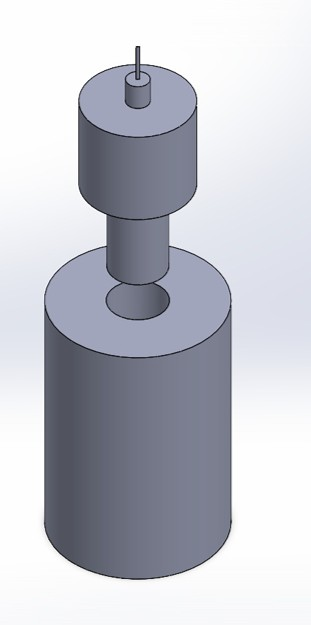
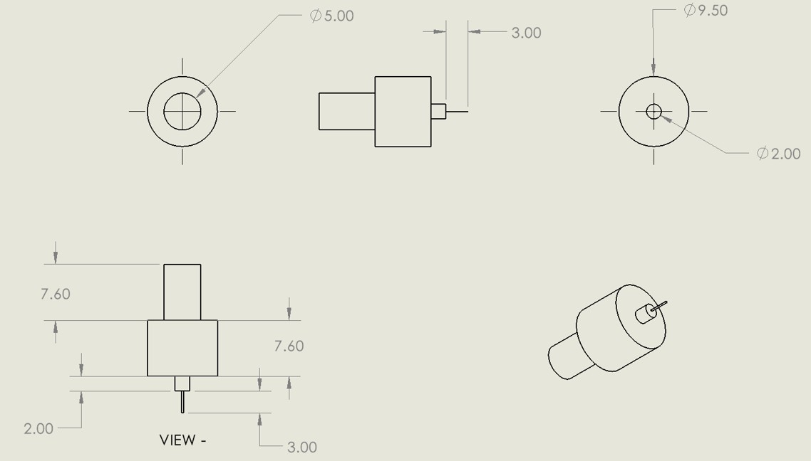
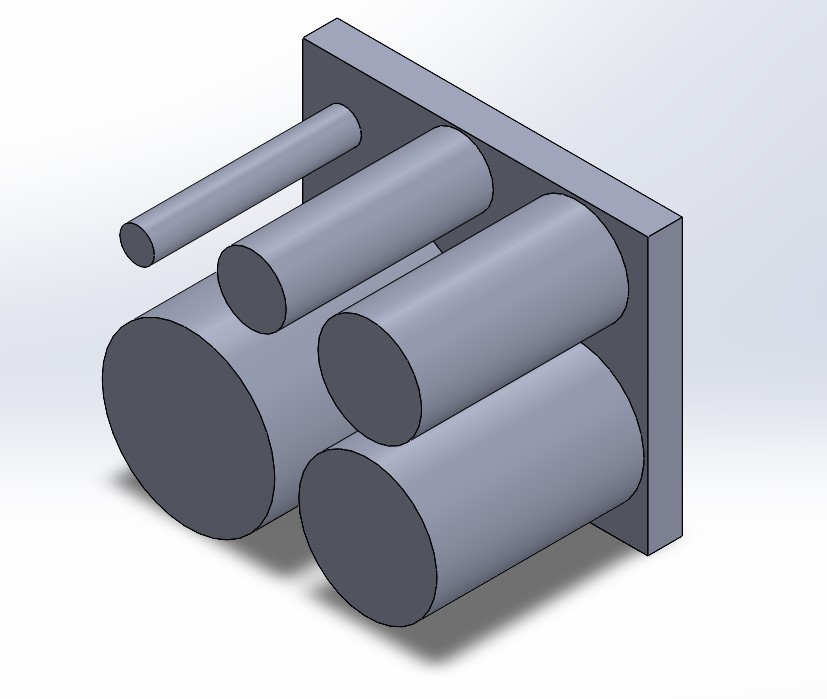
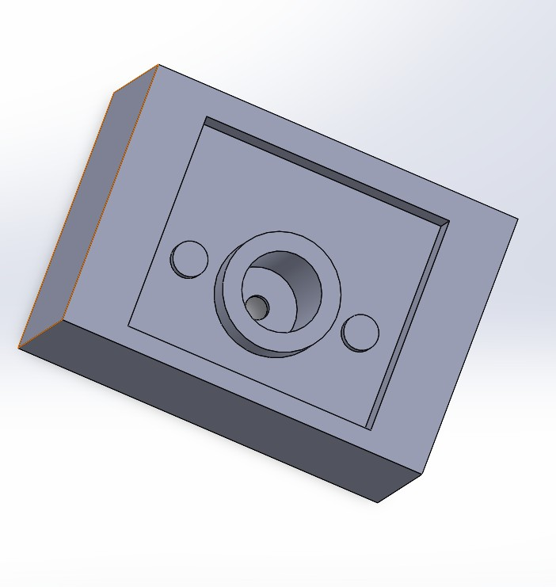
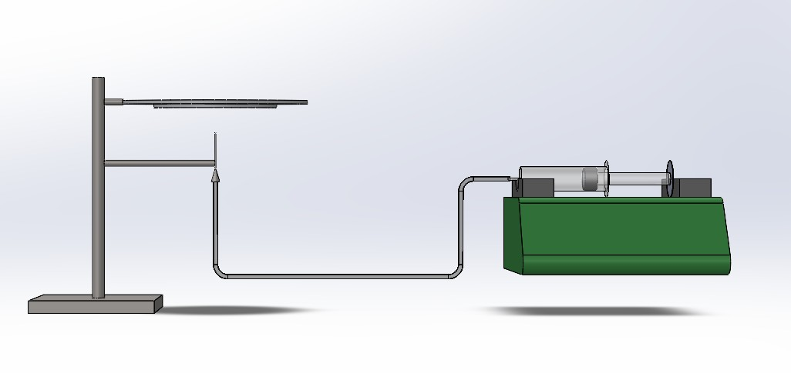
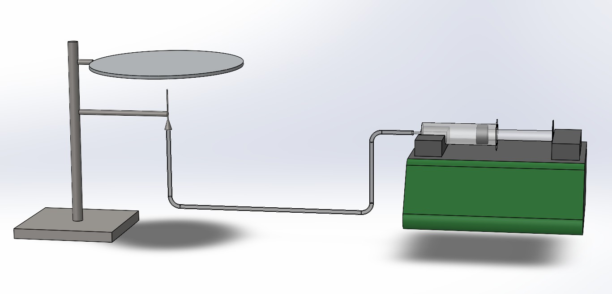
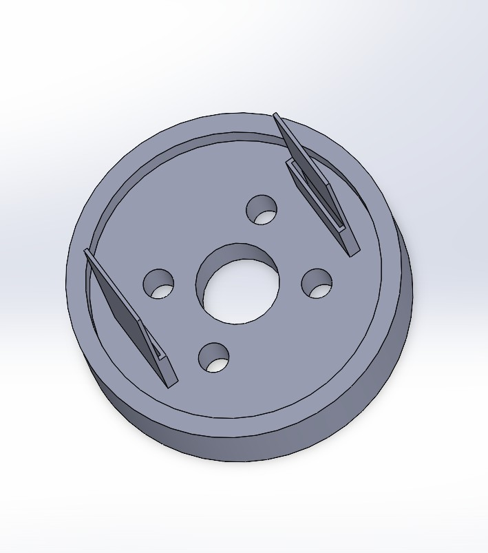
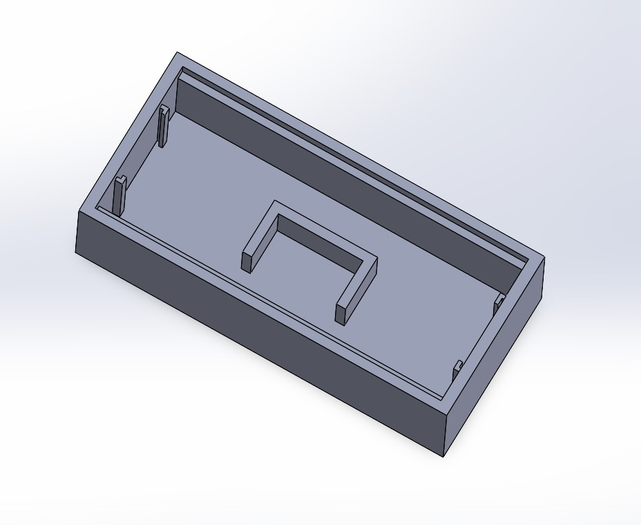

Mechanical Design & SolidWorks
Prototyping & Experimental Systems
CAD Modeling | Rapid Prototyping | Test System Design
Overview
Designed and developed mechanical systems using SolidWorks for experimental setups, biomedical testing, and custom instrumentation. Focused on functional design, rapid prototyping, and integration with real-world testing environments.
Projects range from precision probe design to full experimental system development, emphasizing manufacturability, modularity, and performance validation.
Asymmetric Probe Design
Traditional probes rely on symmetric geometries (circular/spherical), limiting their ability to capture direction-dependent mechanical properties. This work introduces asymmetric probe geometries (rectangular, elliptical) to induce non-uniform stress fields for advanced tissue characterization.
- Designed anisotropic probe geometries for directional sensitivity
- Enabled heterogeneity mapping in muscle fibers
- 3D printed prototypes for rapid iteration
- Integrated with microindentation systems


Mechanical Test Systems
Designed custom mechanical testing platforms for controlled deformation and material response analysis.
- Bending test setup for material evaluation
- Custom fixture design for repeatability
- Integration with measurement systems


Experimental System Design
Developed complete experimental platforms integrating mechanical, electrical, and fluidic components for research applications.
- Bipolar electrochemical (BPE) system design
- Electrostatic spray deposition (ESD) system
- Custom enclosures and mounting structures




Design Approach
- Parametric modeling using SolidWorks
- Design for manufacturability (DFM)
- Rapid prototyping via 3D printing
- Iterative design-validation cycle
Tools & Technologies
- SolidWorks
- 3D Printing
- Mechanical Prototyping
- Experimental Design
- Test System Integration
Impact
Enabled development of custom experimental platforms and advanced probing techniques for material characterization. These designs supported research in biomechanics, electrochemistry, and sensor development through reliable and scalable hardware solutions.